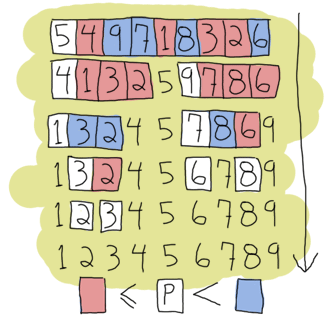

Đệ Quy
Hello recursion!

Chắn hẳn một số độc giả những người quen thuộc với ngôn ngữ lập trình mệnh lệnh và hướng đối tượng sẽ thắc mắc là vì sao không thấy đề cập tới
cấu trúc vòng lặp. Tuy nhiên, trước tiên hãy trả lời cho câu hỏi được đặt ra: "vòng lặp là gì?",
thực tế, trong ngôn ngữ lập trình không để xuất xây dựng vòng lặp với for và while.
Mà thay vào đó, lập trình hàm dựa trên một khái niệm đơn giản được gọi là đệ quy.
Háy nhớ lại về invariable variables đã được giải thích trong chương trước đó. nếu bạn quên,
hãy xem lại
và để ý kỹ! Đệ quy cũng có thể được giải thích như một vòng lặp cùng với sự giúp dỡ đén từ các khái niệm toán học và hàm
. một ví dụ điển hình để đinh nghĩa một hàm đệ quy là phép tính giai thừa.
nếu bạn không nhớ gì về giai thừa, thì sau đây là khái niệm: giai thừa của một số n
là kết quả của phép tính 1 x 2 x 3 x ... x n, một cách viết khác n x (n-1) x (n-2) x ... x 1.
Ví dụ chúng ta tính giai thừa 3 sẽ là 3! = 3 x 2 x 1 = 6. Giai thừa của 4 sẽ là 4! = 4 x 3 x 2 x 1 = 24.
tương tự chúng ta có thể biểu diên bằng công thức toán học sau:
Vậy điều gì sẽ xảy ra nêý giá trị của n là 0, nếu vậy chúng ta sẽ trả về kêt quả là 1.
Còn đối với bất kỳ giá trị nào lớn hơn 0, chung ta sẽ trả về kết là là n nhân với giai thừa của n-1, và cứ tiếp tục vậy cho tới khi
giá trị của giai thừa là 1:
4! = 4 x 3! 4! = 4 x 3 x 2! 4! = 4 x 3 x 2 x 1! 4! = 4 x 3 x 2 x 1 x 1
vậy như thế nào để một hàm có thể truyền từ công thức toán học sang Erlang. Rất đơn giản,
hãy nhin vào các phần của công thức:
n!, 1 và n((n-1)!) và ifs.
nhưng gì ta cần ở đây là một hàm với tên là (n!), điều kiên chốt canh (ifs) và một thân hàm
(1 và n((n-1)!)). chúng ta sẽ phải đổi tên của hàmn! sang fac(N)
để chặt chẽ cú pháp hơn:
-module(recursive). -export([fac/1]). fac(N) when N == 0 -> 1; fac(N) when N > 0 -> N*fac(N-1).
Như vậy chúng ra ddã hoàn thành hàm tình giai thừa! thực sự nó khá giống với định nghĩa trong toán học phải không ? . Chúng ra cũng có một cách viét ngắn hơn bằng cách kết hợp với khớp mẫu:
fac(0) -> 1; fac(N) when N > 0 -> N*fac(N-1).
Đó như bạn thấy đó , một số công thức toán học có So that's quick and easy for some mathematical definitions which are recursive in nature. lặp! đinh nghịa một hàm đệ quy có thể phát biểu ngắn ngọn như sau: "một hàm mà gọi lại chính nó" Tuy nhiên, chúng ta vẫn càn phải có một điều kiện để dừng lại ( hay còn gọi là trường hợp cơ sở ), bởi vì nếu không nó sẽ tạo ra một vòng lặp vô hạn. trong vd trên, thì điều kiện dừng là khi n lớn hơn hay bằng 0. ngay khi thỏa mãn điều đó, hàm sẽ không gọi lại chính nó nữa mà thay vào đó sẽ dừng việc thực thi, chấm dứt hàm.
Length
Nào, hãy thử tiếp tục luyện tập với các vd khác. Tiếp theo chúng ra sẽ thực hiện viết một hàm tính kích thước/ chiều dài của một danh sách. Đây là ý tưởng bắt đầu cho việc thực hiện hàm này bằng đệ quy:
- a base case;
- a function that calls itself;
- a list to try our function on.
với hầu hết các hàm đề quy, chúng ta sẽ dẽ dàng để viết trường hợp cơ sở ( base case ) đầu tiên:
tham số đầu vào dễ nhất là chúng có có thể tìm tối vơi chiều dài cảu một danh sách là gì ?
Tất niên đó là một danh sách rỗng, tức là chiều dai bằng 0. vậy hãy ghi nhớ [] = 0 khi thao tác với danh sách.
trường hợp tiếp theo là khi danh sách có độ dài là 1: [_] = 1.
Dường như chúng ta đã đủ để điều kiện để viết hàm rồi:
len([]) -> 0; len([_]) -> 1.
tuyện vời! chúng ra đã có thể tính chiều dài của một danh sách khi nó rỗng hay khi nó có 1 phần tử rồi!
nó có thực sự hữu ích? Chưa hẳn đâu, bởi vì chúng ra chưa thực hiện bất kỳ một phép đệ quy nào cả.
giờ chúng ta sẽ thực hiện, và đây cũng là phần khó nhất làm viêhc với đệ quy: chúng ta sẽ mở rộng hàm này bằng cách gọi lại chính nó đối với danh sách thay vì chỉ
nhận danh sách đầu vào và trả ra kết quả 0, 1.
có thể bạn sớm nhận ra ở chương chúng ta đã từng đề cập về đệ quy
, các danh sách được xây đựng như một đệ quy [1 | [2| ... [n | []]]].
Điều này có nghĩa là chúng ta có hể sử dụng mẫu biểu thức [H|T] để khớp với một hay nhiều phần tử của danh sách
và tương ứng với chièu dài của danh sách có 1 phần tử sẽ viết như sau [X|[]]
tương tựa với 2 phần tử [X|[Y|[]]].
Hãy để ý, phần tử thứ là một danh sách, hay nó giống với trường hợp danh sách có một phần từ.
Điều này rút ra là chúng ra chỉ cần tính toán đếm phần từ đầu tiên và sau đó gọi tới chính bản thân hàm dựa trên phần tử thứ 2.
Như vậy nếu ra coi mỗi giá trị trong 1 danh sách có độ dài là một, vậy hàm tính độ dài viết theo đệ quy sẽ như sau:
len([]) -> 0; len([_|T]) -> 1 + len(T).
Như vậy bạn đã hoàn thành hàm đệ quy tính chièu dài của một danh sách rồi.
và hãy nhìn xem hàm này ( len/1 ) hoạt dộng như thế nào, hãy thử dưa vào một danh sách có giá trị [1,2,3,4]:
len([1,2,3,4]) = len([1 | [2,3,4])
= 1 + len([2 | [3,4]])
= 1 + 1 + len([3 | [4]])
= 1 + 1 + 1 + len([4 | []])
= 1 + 1 + 1 + 1 + len([])
= 1 + 1 + 1 + 1 + 0
= 1 + 1 + 1 + 1
= 1 + 1 + 2
= 1 + 3
= 4
Chúc mừng bạn, nó hoạt động chính xác!

Length of a Tail Recursion
có thể bạn thấy rằng đối với một danh sách gồm ô phần tử dữ liệu ( terms ), chúng ta mở rọng hàm này bằng cách thay thế bởi mội chuỗi phép cộng của ̀ ̀̀5 phần tử. tuy nhiên nguyên tắc này chỉ hoạt động tốt với một dánh sách có giới hạn về độ dàì, trong trường hợp mà kích của danh sách lớn ( có thể lên với vài triệu phần tử ), nó sẽ là một vân đề vì bạn sẽ phải lưu trữ hàng triệu giá trị trong bộ nhớ chỉ để thực hiện một phép tính đơn giản, nó thực sự là lãng phí do đó trong đệ quy giới thiệu cho ta một cách tốt hơn đó là đệ quy đuôi ( tail recursion ).
vậy thế nào là đệ quy đuôi, ta có có thể khai quat như sau:
đệ quy đuoi là cách để chuyển đổi việc xử lí theo tuyến tính ( kich thước bộ nhớ tỉ lệ thuận vơi các phần tử )
sang một dạng lặp lại ( sẽ không gây ảnh hưởng quá nhiều tới bộ nhớ ).
Tail recursion is a way to transform the above linear process (it grows as much as there are elements) to an iterative one (there is not really any growth).
Để một hàm được gọi là đệ quy đuôi, nó cần phải 'độc lập'. Nghe có vẻ khó hiểu nhưng hay để tôi giải thích:
: trong vd dụ về đẹ quy trước đó những cuộc gọi hàm trước đó được tăng dần , là bởi vì kêt quả của lần gọi thứ nhất phụ thuộc
và kêt quả của lần gọi thứ 2. vd để trả lời cho 1 + len(Rest) chúng ta sẽ phải trả lời cho hàm len(Rest) trước tiên.
và bản thân hàm len(Rest), bản thân nó cũng cần phụ thuộc vào kết quả một một hàm khác được gọi tới.
cứ sau mỗi lần hàm được gọi, ngăn xếp sẽ tích lũy, tăng dần cho tới khi kết quả cuối cùng ( điểm dừng ), sau đó các kết quả/hàm trong ngăn xếp mới đc đảy ra để tính kết quả cuối cùng.
đó là vì sao mà đẹ quy trước đó nếu danh sách chưa một lượng lớn phần tử thì sẽ rất nguy hiểm.
Tuy vậy đệ quy cuối lại khác, nó hướng tới việc vắt giảm tránh các hoạt động lưu trữ quá nhiều và ngăn xếp.
Để làm được vây, chúng ra cần phải tạo ra các biên tạm thời ( phát sinh trong quá trình xử lí hàm ) như một tham số lưu trữ, bổ sung
cho mỗi lần gọi hàm.
để làm rõ nét khái niệm đệ quy cuối, chúng ra sẽ viết lại hàm tính giai thời bằng sử dụng đệ quy cuối.
và tạo ra một biến gọi tên là accumulator
Ở đây tôi đã định nghĩa hai hàm Bạn có thấy sự khác biệt ko? chúng ta thấy không cần phải lưu trữ nhiều hơn 2 kiểu dữ liệu ( terms ) trong bộ nhớ
: không gian bộ được cấp phát để lưu trữ không đổi.
không gian lưu trữ sử dụng để tính giái thừa của 4 với giao thừa của 1 triệu là như nhau
(giai thừa của 4! thì nhỏ hơn rất nhiều so với giai thừa của 1M!). Nào giờ bạn đã có kinh nghiệm việc sử dụng hàm đê quy thông qua ví dụ của hàm tính giai thừa
With an example of tail recursive factorials under your belt,
Bạn có thể thư áp dụng nó vào việc viêt lại hàm sẽ viết lại là: Tuyệt, giờ chụg ta đã có được một hàm tính độ dài theo đệ quy đuôi. Tiếp theo chúng ra sẽ tiếp tục với các vd đệ quy khác để hiểu rõ hơn,
. Như ban đã thấy, Trong Erlang chỉ có một cách duy nhất để tạo vòng lặp đó là sử dụng đệ quy ( ngoài ra bạn có thể dùng list comprehensions)
, Do đó đây là một trong những khái niệm, kiến thức quan trọng cần phải hiểu.
và cũng là kiến thức hữu ích nếu bạn có ý định nghĩa các ngôn ngữ lập trình hàm khác sau này, vì vậy hãy ghi nhớ! Trong vd tiếp sau đây, chúng ta sẽ biết một hàm gọi tên là Bạn đã hoàn thành cơ bản hàm đệ quy rồi, từ hàm đệ quy gốc, bạn có thể dễ dàng chuyển nó sang đệ quy đuôi bằng cách
chuyển danh sách khởi tạo tới một biến tạm thời như sau: Tuyệt! Giờ tôi muốn thay đổi chủ để một chút để chỉ ra sự tương đồng giữa đệ quy đuôi và vong lặp while.
Hàm Lưu ý, tất cả các phần tử ở cả ngôn ngữ hư cấu với Erlang là như nhau. Chỉ khác mỗi vị trí thôi.
Điều này chứng tỏ việc viết một hàm đệ quy đuôi tương tự như viết một quá trình lặp ( iterative process ) như vòng lặp while. Ngoài ra có một điều thứ vị mà chúng ta có thể 'khám phá' khi so sánh giữa hàm đệ quy thường và đệ quy đuổi là bằng cách viết một hàm
There's also an interesting property that we can 'discover' when we compare recursive and tail recursive functions by writing a
gọi là Trong trường hợp dánh sách quá dài, nó sẽ thật tồi tệ: ngắn xếp sẽ dần dần tăng lên sau mỗi lần gọi,
but we will need to traverse the whole list for every single of these appends until the last one! For visual readers, the many checks can be represented as: Đó là lí do vì sao chúng ta cần đến đệ quy đuôi, nó sẽ giải quyết được vấn đề trên
. Bằng cách sủ dụng một biến tạm thời kiểu danh sách gọi là accumulator, biến này sẽ thêm mỗi phần tử vào đầu sau mỗi lần gọi
khi đó danh sách của chúng ra sẽ tự động được nghịch đảo , hãy xem việc thực hiện hàm này: Nếu chúng ra đi chi tiết từng bước của hàm trên, chúng ra sẽ có: Bạn có thể thấy rằng việc nghịch đảo từng phần tử trong danh sách của chúng ta giờ sẽ theo tuyến tính:
tránh được việc tăng kích thước của ngăn xếp, đông thời mang lại hiệu quả cao khi thực hiện! Một ví dụ khác, chúng ra sẽ thực hiện hàm Tương tự chúng ra cũng chuyển qua dạng đệ quy đuôi như sau: Vậy là chúng ra đã xong ? không, có một thiếu sót trong hàm này. Một thiếu sót tai họa!
chúng ta vẫn sử dụng một danh sách tạm như một accumulator giống với những gì đã làm với 'reverse' trước đó.
tuy nhiên khi bạn gõi hàm này với Hm, hãy gọi là vd trên , bạn sẽ nhận được kết quả chính xác. Nhưng khoan, trong thay đổi này chúng ta sẽ phải gọi tới
hàm reverse trước tiên, và chúng ra cần phải định nghĩa hàm reverse trước tiên, bạn nhận thấy rằng đây là một danh sách con lên
có vẻ như việc viết một hàm đệ quy đuổi và gọi nó cho việc nghịch đảo danh sách này thật thừa thái, lãng phí thời gian
( vì chúng vẫn lưu bên trong bộ nhớ )
Đùng với một danh sách ngắn, đoạn code của bạn viết ở đệ quy thường sẽ chạy nhanh hơn đệ quy đuôi
nhưng khi làm việc với một lượng lớn dữ liệu, nghịch đảo danh sách với hàm đệ quy đuôi sẽ nhẹ hơn. Lưu ý: thay vì việc tự đinh nghĩa một hàm Để tiếp tục, chúng ta sẽ thực hiện viết một hàm zipping. Hàm này sẽ nhận hay tham số đầu vào thuộc kiểu dữ liệu danh sách và cùng cùng độ dài,
sau đó nó sẽ thực hiện việc nối các phần tử của chúng lại với nhau thành một bộ danh sách ( mỗi phần tử là một bộ chưa 2 phần tử ).
Hàm của chúng ta sẽ có dạng Giờ chúng ta sẽ viết chúng, trước tiện chúng ta sẽ đi tìm điều kiện dừng ( base case ) của hàm này.
đói với danh sách dễ dang nghĩa ngay tới điều kiện danh sách rông đâu tiên, hơn nữa đầu vào yêu cầu là hai danh sách có cùng độ dại do đó, điều kiện của chúng ta sẽ là
zipping hai danh sách rông lại với nhau và có dạng như sau: Tuy nhiên, nếu bạn muốn hoàn thiện hơn, bạn lên mở rộng bằng cách thêm điều kiện dừng khi một trong hay danh sách
là rỗng. do đó ,bạn sẽ có 2 điều kiện dừng với hàm này: Chý ý là bất kể chúng ta định nghĩa điều kiện dừng thế nào thì phần đệ quy của hàm vẫn không thay đổi.
và để hiểu rõ cũng như thanh thạo hơn, tôi khuyên bạn hay thử chuyển hàm nếu bạn muốn tìm câu trả lời cho hàm đệ quy đuôi của Lưu ý: đệ quy đuôi được xem là phương pháp sử dụng đệ quy mà không làm tăng kích thước của ngăn xếp hay bộ nhớ
sử dụng vì trong máy ảo Erlang , nó được nhìn nhận như một lời gọi hàm cuồi cùng trong ngăn xếp ( hay biểu thức cuối cùng được thẩm định trong hàm (evaluation function))
tail recursion as seen here is not making the memory grow because when the virtual machine sees a function calling itself in a tail position
, bằng cách này thay vì đẩy tưng biểu thức và hàm vào trong ngắn xếp, nó sẽ loại bỏ khung ngăn xếp hiện tại đi.
kỹ thuật này được gọi là tail-call optimisation (TCO) và là một trong những trường hợp đặc biệt của
kỹ thuật tối ưu hóa Last Call Optimisation (LCO). LCO sẽ được gọi bất cứ khi nào biểu thức cuối cùng được thẩm định khi một hàm gọi một hàm khác.
Khi điều đó ra, cùng với TCO , máy ảo Erlang tránh lưu trữ trong ngăn xếp,
như trong trường hợp đệ quy đuôi, nó có thể xen giữa nhiều hàm.
Vd ra có một chuôic các hàm như sau Nào giờ có thể bạn đã hiểu rõ ràng về đệ quy và đệ quy cuối, nhưng không có chỉ đảm bảo chắc cả bởi vì tất cả những ví dụ mà ta đã làm trên rất cơ bản,
do đó dể chắc chắn , chúng ta sẽ tìm hiểu những vidụ phức tạp hơn.
Trong cấu trúc dũ liệu và giải thuật , chắc hẳn không ai là không làm quen với các giải thuật sắp xếp, trong các giải thuật đó có một vài giải thuật phức tập sử dụng đẹ quy đề giải quyết,
vâng giải thuật tôi muốn nói ở đây là giải thuật quicksort.
I can (and will) now assume recursion and tail recursion make sense to you, but just to make sure, I'm going to push for a more complex example, quicksort.
Yes, the traditional "hey look I can write short functional code" canonical example.
Vâng, nhìn vào bạn có thể tự hào và nói "tôi có viết một hàm này một cách ngắn gọn, nhanh chóng".
Giải thuật quicksort có thể thực hiện một cách nhanh chóng bằng cách lấy phần tử đầu tiên của một danh sách dể so sánh, ta gọi phần tử này là
pivot hay key, tiếp đó ra phân vùng băng cách đặt tạo ra hai danh sách mới , bà đặt tất cả phần tử nhỏ hơn hay bằng phần tử pivot sang bên trái
sang danh sách mới đó ( nó sẽ nằm trước phần tử pivot ) và tất cả các phần tử lớn hơn sang danh sách còn lại ( nằm phía sau pivot ).
tương tự chúng ra thực hiện lặp lại các bước như vậy với 2 danh sách mới mà chúng ta vừa nhân được sao cho tới khi danh chỉ còn 1 phần tử hay không thể chia nhỏ được nữa ( danh sách rông ).
Đó cũng là điều kiện dừng của giải thuật này khi áp dụng đệ quy.
Lưu ý: như đã đề cập đây là cách thực hiện nhanh chóng do đó nó sẽ không được tối ưu, đối với bản tối ưu của quicksort với việc chọn ra phần tử pivot chúng ta sẽ đè cập sau,
trước mắt chúng ta chỉ xét ví dụ cơ bản. Đầu tiên, chúng ta sẽ cần có hai hàm: hàm đầu tiên có chức năng chia danh sách thành hay phần,
phần chứa những phần tử nhỏ hơn và phàn cứ những phần tử lớn hơn,
hàm thứ hai là hàm gộp lại tất cả các thành phần đã chia nhỏ lúc trước.
Hàm đâu tiên chúng ra viết sẽ là hàm gộp các phàn tử lại: Tiếp theo chúng ta sẽ viết hàm còn lại
như đã nói, tiếp theo chúng ta sẽ viết một hàm có chức năng chia danh sách thành hai phần lớn hơn và nhỏ hơn của các phần tử ,
phần tử pivot có vai trò làm vách ngăn giữa hai danh sách lớn và nhỏ đồng thời là điểm kết nối các danh sách lại với nhau.
hàm 'partitioning' sẽ được viết như sau: như vậy hàm quicksort của chúng ta đã hoàn thành rồi.
Nếu bạn tìm kiếm các vị dụ về giải thuật quicksort viết bằng Erlang trên Internet bạn có sẽ thấy nhiều cách thực hiện khác nhau,
trong các vd đấy có một cách đơn giảm và dễ đoc nhưng nhưng sẽ phải dùng tới list comprehensions.
Và chúng sẽ dễ dàng áp dụng vào trong các đoạn mã tạo ra các danh sách mới gọn hơn, vd như hàm điểm khác biệt lớn trong hàm trên đó là gắn gọn và dễ dàng đọc hơn, hơn nữa chúng ta không phải định thêm một các hàm tách biêt khác.
nhưng dễ đọc không kèm với hiệu xuất thực hiện, trong hàm trên nó phải duyêt danh sách hai lần để phân chia danh sách lớn vào trong 2 danh sách nhỏ hơn
trong một cuộc đua tốc độ thì rõ ràng đièu này sẽ chống lại hiệu suất thực hiên,
tuy vậy bạn vẫn là người thôi cuộc thôi bởi vì chúng ta không cần phải thực hiện hàm sắp xếp gì hết bởi vì trong module lists hàm sắp xếp Don't drink too much Kool-Aid: một vấn đề khác nữa là cách chúng ta sẽ tiếp tục duyệt các danh sách mà sau khi đã được phân chia ra, xử lí và gộp chúng với pivot ( cứ thể lặp lại do đó sẽ phải duyệt nhiều hơn một lần ).
Do đó để giảm nhệ việc này băng cách ghép chúng lại trong quá trình phân chia danh sách thành 3 phần.
Nếu vẫn chưa hinh dung được hãy nhin hàm ( một điều thú vi của giải thuật quicksort là chúng có thể hoạt động với bất kỳ kiểu dữ liệu nào trong danh sách ( thậm chí cả bộ danh sách ). Nếu bạn Không tin, hãy thử
, Chúng sẽ hoạt động chính xác! Đoc tơi đây, bạn có thể bắt đầu nghĩ rằng đệ quy trong Erlang phần lớn làm việc cụ thể với kiểu dữ liệu danh sách
.Mặc dù danh sách là một ví dụ tốt nhất của cấu trúc dữ liệu để minh họa cho đệ quy nhưng dĩ liên là
vẫn có thể sử dụng các kiểu diệu khác, Trong cấu trúc dữ liệu và giải thuật chắc hẳn không thể không nhăc tới cậy, đặc biệt là cậy nhin phân và sử dụng hàm hàm đệ quy cho thêm,
sửa , xóa và duyệt các nút con, chúng ta sẽ thực hiện một ví dụ đơn giản đó trong Erlang: Bước đầu tiên, chúng ta hãy xem lại lý thuyết, định nghĩa thế nào là một cây. trong trường hợp của chúng ta,
nó gồm các nút từ trên xuống. cá nút sẽ được coi là các bộ chứa một khóa, một giá trị liên kết với khóa đó,
và 2 nút con. Tát nhiện với cây nhị phân, thì các nút con sẽ mang giá trị nhỏ hơn hay lớn hơn nút cha ( nút hiện tại ) tùy thuộc vào vị trị ( ở đâu ta sẽ coi nút con đầu tiên mang giá trị nhỏ hơn
và nút con thứ hai mang giá trị lớn hơn nút cha ). vậy ta sẽ có đệ quy trong cây! một cây sẽ bao gồm một nút ( nút gốc ) chứa các nút con, trong đó mỗi một nút con lại chưa các nút con khác
và cứ liên tục như thé với các nút con thuộc nút cha trước đó.
tuy nhiên nó sẽ không lặp lại như thế vô tận bởi vị dung lượng bộ nhớ có hạn cho việc lưu trữ,
vì vậy các nút con cũng có thể không chưa bất kỳ một nút nào ( nút rỗng ). Trong vd này bộ là kiểu cấu trúc dữ liệu thích hợp nhất cho việc biểu diễn các nút. chúng ta sẽ định nghĩa một nút như sau hãy bắt đầu xây dựng một vd về cẫu trúc dữ liệu cây đơn giản đặt tên là module . T
Hàm đầu tiên chúng ta sẽ định nghĩa là hàm By using that function and then encapsulating all representations of nodes the same way,
chúng ta sẽ ẩn phần thực hiện của cấu trúc cây đi vì người dùng chỉ cần biết cách nó hoạt động thế nào thôi thay biết biết nó được xây dưng thế nào
. Tất cả các thông tin chỉ tồn tại trong module đó. Nêu bạn có ý định đinh thay đổi trạng thái, logic của của môt nút, bạn có thể làm nhưng đừng phá vỡ cấu trúc của sử dụng module đối với sử dụng module tree trong các module khác. để thêm một nút, trước tiên chúng ta phải hiểu cách thức đệ quy trong thao tác duyệt cây.
Hãy làm các bước tương tự với cách mà chúng ta đã làm với các vd đệ quy trước đó, bước đâu tiên của chúng ta khi viết một hàm đệ quy đó là
tìm điẻm dừng ( base case ). trong trường hợp này sẽ là một nút rỗng, do đó bất cứ khi nào chúng ta gặp nút rỗng, chúng ta sẽ thêm một nút cùng với giá trị
mà chúng ta cần thêm vào. tương tự trong các trường hợp khác, khi nút đó đã được được lấp giá trị, chúng ta sẽ tiến hành duyệt cho tới khi nào nút con của nút đó là nút rống (
lưu ý phải đảm bảo rằng giá trị đầu tiên của nút con luôn nhỏ hơn nút cha ( nut chứa nó ) và giá trị nút con thứ hai lớn hơn giá trị nút cha ). chúng ta sẽ đi chi tiết vào việc duyệt nút,
từ một nút gốc , để tìm một nút rỗng, chúng ta phải xác định các nút con của nó,
như bạn thấy trong một nút bao gồm hay nút con Smaller và Larger, các nút này chưa các nút con khác, điều này cho phép chúng ta
di chuyển tới các nút đó bằng cách so sánh giá trị của khóa mới mà chúng ta muốn thêm vào với giá trị nút hiện tại.
nếu giá trị nhỏ hơn ta sẽ tìm nút rỗng ở nút Smaller ( tức nút đâu tiên ) , ngược lại ta sẽ chuyển qua tìm ở nút Larger.
Trong trường hợp nếu giá trị của khóa mới đó bằng với giá trị nút hiện tại đang so sánh, chúng ta sẽ có hai lựa chọn: đầu tiên là thay thế giá nút đó với giá trị mới, lựa chọn còn lại là để cho chương trình tạo ra lỗi. Trong ví dụ này
chúng ta sẽ chọn phương án đầu tiên dó là thay thế giá trị của nút, chúng ta sẽ thực hiện như sau: Lưu ý rằng kết quả trả về của hàm luôn là một nút với một cây hoàn toàn mới. đây là đặc điểm của các ngôn ngữ lập trình hàm vì chúng quy định chỉ có
có một biến chỉ được phép gán duy nhất một giá trị. Mặc du cách làm này không hiệu quả và làm giảm hiệu suất của chương trình, tuy vậy trong máy ảo Erlang, nó sẽ lưu trữ
Note here that the function returns a completely new tree. This is typical of functional languages having only single assignment.
While this can be seen as inefficient, most of the underlying structures of two versions of a tree sometimes happen to be the same and are thus shared, copied by the VM only when needed. Cuối cùng để hoàn thành cấu trúc dữ liệu cây này, chung ta viết hàm tìm kiếm, duyệt cây, những gì chũng ta cần làm là tạo ra một hàm
với tên gọi là Giờ bạn đã có hoàn chỉnh module tree rồi, hãy biên dịch và kiểm tra hàm này trong shell cùng với một ví dụ nhỏ
về địa chỉ emai: Giờ hãy thử gọi hàm tìm kiếm để tìm kiếm địa chỉ email: That concludes our functional address book example built from a recursive data structure other than a list! Anita Bath now... Note: Our tree implementation is very naive: we do not support common operations such as deleting nodes or rebalancing the tree to make the following lookups faster. If you're interested in implementing and/or exploring these, studying the implementation of Erlang's If you've understood everything in this chapter, thinking recursively is probably becoming more intuitive. A different aspect of recursive definitions when compared to their imperative counterparts (usually in while or for loops) is that instead of taking a step-by-step approach ("do this, then that, then this, then you're done"), our approach is more declarative ("if you get this input, do that, this otherwise"). This property is made more obvious with the help of pattern matching in function heads. If you still haven't grasped how recursion works, maybe reading this will help you. Joking aside, recursion coupled with pattern matching is sometimes an optimal solution to the problem of writing concise algorithms that are easy to understand. By subdividing each part of a problem into separate functions until they can no longer be simplified, the algorithm becomes nothing but assembling a bunch of correct answers coming from short routines (that's a bit similar to what we did with quicksort). This kind of mental abstraction is also possible with your everyday loops, but I believe the practice is easier with recursion. Your mileage may vary. And now ladies and gentlemen, a discussion: the author vs. himself
tail_fac(N) -> tail_fac(N,1).
tail_fac(0,Acc) -> Acc;
tail_fac(N,Acc) when N > 0 -> tail_fac(N-1,N*Acc).
tail_fac/1 và tail_fac/2.
Lí dó của việc làm này là bởi vì hàm trong Erlang không cho phép sử dụng mặc định tham số (default arguments - các hàm mà cùng tên nhưng khác đối số thì vẫn tương ứng là các hàm khác nhạu )
) do đó chúng phải phải định nghĩa từng trương hợp bằng tay. trong trường hợp xác định trên,
hàm tail_fac/1 sẽ hoạt động một cách trừu tương qua hàm đệ quy đuôi tail_fac/2.
và thông của biến accumulator của hàm tail_fac/2 sẽ được ẩn,
do đó chùng ta chỉ cần export hàm tail_fac/1 trong thuộc tính của module. cách thức hoạt động của đệ quy cuối trong hàm tính giai thừa được giải thích như sau:
tail_fac(4) = tail_fac(4,1)
tail_fac(4,1) = tail_fac(4-1, 4*1)
tail_fac(3,4) = tail_fac(3-1, 3*4)
tail_fac(2,12) = tail_fac(2-1, 2*12)
tail_fac(1,24) = tail_fac(1-1, 1*24)
tail_fac(0,24) = 24
len/1.
Nhưng gì chúng ra cần là việc tạo tạo ra một hàm đệ quy ( recursive call 'alone' ).
Nếu bạn thích ví dụ trực quan , hãy hình dung sau đây, giả sử bạn đặt +1 vào trong lời gọi hàm bằng cách thêm một tham số như sau:
len([]) -> 0;
len([_|T]) -> 1 + len(T).
tail_len(L) -> tail_len(L,0).
tail_len([], Acc) -> Acc;
tail_len([_|T], Acc) -> tail_len(T,Acc+1).
More recursive functions

duplicate/2.
hàm này sẽ nhận hai tham số đầu vào , tham số thứ nhất thuộc kiểu dữ liệu số nguyên và tham số thứ hai có thể là bất kỳ kiểu dữ liệu nào khác.
tiếp theo chúng ra sẽ tạo ra một danh sách có kích thước bằng với giá trị ở tham số đầu tiên và chứa các giá trị là giá trị ở tham số thứ hai:,
. Hàm duplicate/2 có điều kiện dừng là khi giá trị ở tham số thứ nhất bằng 0 ( tức là sẽ không còn lần lặp nào nữa )
. Khi đó chúng ta sẽ trả về kết quả là một danh sách rỗng, chúng ta sẽ không quan tâm tới việc dữ liệu thuộc kiểu gì.
Đối với các trường khác, chúng ta sẽ kiểm tra bằng cách gọi lại chính bản thân hàm đó đồng thời kiểm tra điều kiện dừng của hàm dó.
bởi vì bạn không thể nào sao chép một thứ gì đó với -n lần, lên giá tri âm đối với số nguyên sẽ không được phép:
duplicate(0,_) ->
[];
duplicate(N,Term) when N > 0 ->
[Term|duplicate(N-1,Term)].
tail_duplicate(N,Term) ->
tail_duplicate(N,Term,[]).
tail_duplicate(0,_,List) ->
List;
tail_duplicate(N,Term,List) when N > 0 ->
tail_duplicate(N-1, Term, [Term|List]).
tail_duplicate/2 có tất cả các thành phần thường thấy ở vòng lặp while.
Hãy hình dùng bằng cách viết một vòng lặp while dưới một ngữ ngữ hư cấu thông qua việc sử cú pháp của Erlang, nó sẽ có dạng như sai:
function(N, Term) ->
while N > 0 ->
List = [Term|List],
N = N-1
end,
List.
reverse/1, hàm này sẽ có chứng năng nghịch đảo các phân tử của một danh sách.
Trường hợp cơ sở của hàm này là một danh sách rỗng . khi đó sẽ không có phần tử nào để nghịch đảo hết.
Với các trường hợp khác, chúng lên quy về trường hợp cơ sở bằng cấch gọi lại chính nó.
tương tự như khi ta viết hàmduplicate/2. Bằng cách duyệt danh sách kết hợp với sử dụng khớp mẫu [H|T]
và đặt giá trị H và cuối danh sách, chúng ra sẽ có được như sau:
reverse([]) -> [];
reverse([H|T]) -> reverse(T)++[H].
reverse([1,2,3,4]) = [4]++[3]++[2]++[1]
↑ ↵
= [4,3]++[2]++[1]
↑ ↑ ↵
= [4,3,2]++[1]
↑ ↑ ↑ ↵
= [4,3,2,1]
tail_reverse(L) -> tail_reverse(L,[]).
tail_reverse([],Acc) -> Acc;
tail_reverse([H|T],Acc) -> tail_reverse(T, [H|Acc]).
tail_reverse([1,2,3,4]) = tail_reverse([2,3,4], [1])
= tail_reverse([3,4], [2,1])
= tail_reverse([4], [3,2,1])
= tail_reverse([], [4,3,2,1])
= [4,3,2,1]
sublist/2, hàm này sẽ nhận hai tham số đầu vào, tham số đầu tiên thuộc kiểu danh sách gọi là biến L và tham số thứ hai
là một biến N thuộc kiểu số nguyên ,
kết quả của hàm này là trả về danh sách đó với N phần tử ( tính từ phần từ đầu tiên của danh sách đó ). vd ta có
sublist([1,2,3,4,5,6],3), kết quả trả về sẽ là [1,2,3].
Ngược lại , chúng ta sẽ kết thúc nếu giá trị N là 0.
Lưu ý, hàm sublist/2 sẽ khác biệt đôi chút với những hàm ta đã viết trước đó.
trong trường hợp nếu danh sách truyền vào là một anh sách rỗng khi đó bất kể vị trí cần tìm là bao nhiêu thì kết quả trả về vẫn là danh sách rỗng, do đó
bạn sẽ có một điều kiện dừng ( base case ) thứ hai đối với giá trị truyền vào là một danh sách rỗng!
Trường hợp bạn quên kiểm tra điệu kiện danh sách rống hay không, sẽ có lỗi xảy ra nếu bạn gọi hàm sau recursive:sublist([1],2).
thay vì kêt quả mong muốn là [1]
. Một khi được đinh nghĩa, phần đệ quy của hàm phải tập trung vào danh sách, giữ các phần tử của danh sách
cho tới khi khớp với một trong các đièu kiện dùng ( base case ):
sublist(_,0) -> [];
sublist([],_) -> [];
sublist([H|T],N) when N > 0 -> [H|sublist(T,N-1)].
tail_sublist(L, N) -> tail_sublist(L, N, []).
tail_sublist(_, 0, SubList) -> SubList;
tail_sublist([], _, SubList) -> SubList;
tail_sublist([H|T], N, SubList) when N > 0 ->
tail_sublist(T, N-1, [H|SubList]).
sublist([1,2,3,4,5,6],3) nó sẽ không trả về [1,2,3],
thay vào đó kêt quả nhận được là [3,2,1].
về cơ bản hàm này thực hiện không sai nhưng điều khác biệt ở đây là kết quả cuối cùng ta nhận được lại là thứ tự nghịch đảo củ danh sách đó
. Vì thế hãy thay đổi lại logic của hàm tail_sublist/2 như sau:
tail_sublist(L, N) -> reverse(tail_sublist(L, N, [])).
reverse/1, bạn lên sử dụng hàm đã được định nghĩa sẵn trong module listslists:reverse/1.
nó được sử dụng rất nhiều do đó các nhà phát triển Erlang đã quyết đưa nó vào trong BIFs.
hơn nữa việc sử dụng hàm này trong module lists sẽ làm cho danh sách của bạn đc nghịch đảo vô cùng nhanh ( bởi vì nó được được viết bằng C) và làm giảm rất nhiều nhược điểm
của hàm mà trước đó chúng ta đã viết bằng Erlang. Chúng ta vẫn sử dụng hàm 'reverse' do chúng đã đã viết trước đó trong chương này, các chương về sau chúng ta lên sử dụng
hàm BIFs từ module lists.zip/2 và thưc hiện nhu sau:
1> recursive:zip([a,b,c],[1,2,3]).
[{a,1},{b,2},{c,3}]
zip([],[]) -> [];
zip([X|Xs],[Y|Ys]) -> [{X,Y}|zip(Xs,Ys)].
lenient_zip([],_) -> [];
lenient_zip(_,[]) -> [];
lenient_zip([X|Xs],[Y|Ys]) -> [{X,Y}|lenient_zip(Xs,Ys)].
zip/2 và lenient_zip/2 sang đệ quy đuổi,
bằng cách hiểu vvề cách hoạt động của đệ quy đuôi: nó sẽ rất hữu ích vì đây là khái niệm rất quan trọng đằng sau các ứng dụng lớn nơi mà các vòng lặp chính sẽ hoạt động.zip/2 và lenient_zip/2,
bạn có thể tìm kiếm chúng trong đoạn mã của tôi recursive.erl,
tương ứng với 2 hàm tail_zip/2 và tail_lenient_zip/3.a() -> b(). b() -> c(). c() -> a().
,nhìn các hàm trên bạn hãy để ý tằng, hàm 'a', gọi hàm 'b', tương tự 'b' gọi 'c' và cuối cùng 'c' gọi 'a', bằng cách làm này
nó sẽ tạo ra một vòng lặp vòng hạn, tuy nhiên bộ nhớ sẽ không tràn ( hêt dung lượng ) bởi vì LCO sẽ điều chỉnh để
tránh làm đầy ngăn xếp. Bằng cách ứng dụng nguyên lí này, kết hợp với viẹc sử accumulators làm cho đệ quy cuối thật sự tỏa sáng.Quick, Sort!

quicksort([]) -> [];
quicksort([Pivot|Rest]) ->
{Smaller, Larger} = partition(Pivot,Rest,[],[]),
quicksort(Smaller) ++ [Pivot] ++ quicksort(Larger).
partition(_,[], Smaller, Larger) -> {Smaller, Larger};
partition(Pivot, [H|T], Smaller, Larger) ->
if H =< Pivot -> partition(Pivot, T, [H|Smaller], Larger);
H > Pivot -> partition(Pivot, T, Smaller, [H|Larger])
end.
partition/4 sau:
lc_quicksort([]) -> [];
lc_quicksort([Pivot|Rest]) ->
lc_quicksort([Smaller || Smaller <- Rest, Smaller =< Pivot])
++ [Pivot] ++
lc_quicksort([Larger || Larger <- Rest, Larger > Pivot]).
lists:sort/1
đã tồn tại. Vì vậy chỉ gọi lên và sử dụng thôi.
Mã sạch, ngăn gọn xúc tích thì luôn được khuyến khích trong luyện tập và thực tế , nhưng không phải lúc nào nó cũng tỉ lệ thuận với hiệu suất
. thực tế, trên mạng có rất nhiều các bài hướng dẫn không bao giờ đề cập vấn đề này!
cả hai vd thực hiện ở trên đều cần phải xử lí liên tục so sánh các giá trị với giá tri pivot nhiều hơn một lần.
Do đó bạn hiệu quả hơn bạn có thể chia làm 3 phần danh sách thay vì 2 như trước: một cho các phần tử nhỏ hơn, một cho lớn hơn và còn lại cho nhưng giá trị bằng giá trị pivot theo thứ tự.bestest_qsort/1) trong recursive.erl.More than lists

{node, {Key, Value, Smaller, Larger}}
(a tagged tuple!), trong đó Smaller và Larger có thể là các nút khác hay là một nút rỗng ({node, nil}).
mặc dù nhìn có về hơi khó , nhưng để đơn giản chúng ta chỉ cần định nghĩa như vậy.empty/0, hàm này sẽ trả về kết quả là một nút rỗng.
trong cấu trúc dữ liệu cây, nút rỗng có thể được như như điểm bắt đầu của một cây hay còn được gọi làroot ( nút gỗc ):
-module(tree).
-export([empty/0, insert/3, lookup/2]).
empty() -> {node, 'nil'}.
insert(Key, Val, {node, 'nil'}) ->
{node, {Key, Val, {node, 'nil'}, {node, 'nil'}}};
insert(NewKey, NewVal, {node, {Key, Val, Smaller, Larger}}) when NewKey < Key ->
{node, {Key, Val, insert(NewKey, NewVal, Smaller), Larger}};
insert(NewKey, NewVal, {node, {Key, Val, Smaller, Larger}}) when NewKey > Key ->
{node, {Key, Val, Smaller, insert(NewKey, NewVal, Larger)}};
insert(Key, Val, {node, {Key, _, Smaller, Larger}}) ->
{node, {Key, Val, Smaller, Larger}}.
lookup/2, hàm này sẽ cho phép bạn tìm giá trị ( hay nút ) của cây bằng cách truyền vào khóa của một.
logic trong hàm tìm kiếm này tương tự giống với những gì ta đã là khi thêm một giá trị vào cây:
chúng sẽ sẽ tiến hành duyệt nút, so sánh khóa bằng, nhỏ hơn hay lớn hơn khóa của nút hiện tại, trong trường hợp không tìm thấy khóa nào và để tránh lỗi xảy ra
( có thể làm ngừng chương trình ) chúng ta sẽ trả về một atom 'undefined', ngược lại trả về {ok, Value}
. Đối với kết quả của việc tìm tháy ban sẽ thắc mắc tại sao lại trả về một bộ có dạng {ok, Value} thay vì chỉ trả về giá trị tìm được Value, lí giải của viẹc làm này
đó là nếu chúng ta chỉ trả về Value , có điều nếu giá trị đó của một node chứa 'undefined', khi kết hợp phép khớp trong khớp mẫu,
chúng ta sẽ không biết thực sự là tìm được giá trị hay không tìm thấy giá trị đó. do đó để tránh rủi ro, chúng ta đặt giá trị tìm được đó trong bộ, kềm theo một atom để
chỉ sự thành công của việc tìm kiếm. Hàm của chúng ta sẽ được viết như sau:
lookup(_, {node, 'nil'}) ->
undefined;
lookup(Key, {node, {Key, Val, _, _}}) ->
{ok, Val};
lookup(Key, {node, {NodeKey, _, Smaller, _}}) when Key < NodeKey ->
lookup(Key, Smaller);
lookup(Key, {node, {_, _, _, Larger}}) ->
lookup(Key, Larger).
1> T1 = tree:insert("Jim Woodland", "jim.woodland@gmail.com", tree:empty()).
{node,{"Jim Woodland","jim.woodland@gmail.com",
{node,nil},
{node,nil}}}
2> T2 = tree:insert("Mark Anderson", "i.am.a@hotmail.com", T1).
{node,{"Jim Woodland","jim.woodland@gmail.com",
{node,nil},
{node,{"Mark Anderson","i.am.a@hotmail.com",
{node,nil},
{node,nil}}}}}
3> Addresses = tree:insert("Anita Bath", "abath@someuni.edu", tree:insert("Kevin Robert", "myfairy@yahoo.com", tree:insert("Wilson Longbrow", "longwil@gmail.com", T2))).
{node,{"Jim Woodland","jim.woodland@gmail.com",
{node,{"Anita Bath","abath@someuni.edu",
{node,nil},
{node,nil}}},
{node,{"Mark Anderson","i.am.a@hotmail.com",
{node,{"Kevin Robert","myfairy@yahoo.com",
{node,nil},
{node,nil}}},
{node,{"Wilson Longbrow","longwil@gmail.com",
{node,nil},
{node,nil}}}}}}}
4> tree:lookup("Anita Bath", Addresses).
{ok, "abath@someuni.edu"}
5> tree:lookup("Jacques Requin", Addresses).
undefined
gb_trees module (otp_src_R<version>B<revision>/lib/stdlib/src/gb_trees.erl) is a good idea. This is also the module you should use when dealing with trees in your code, rather than reinventing your own wheel.Thinking recursively